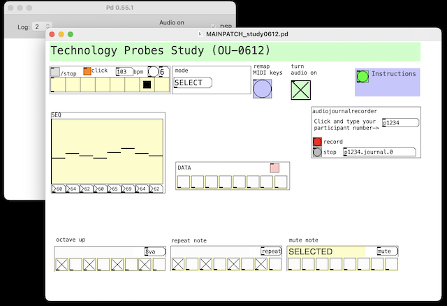
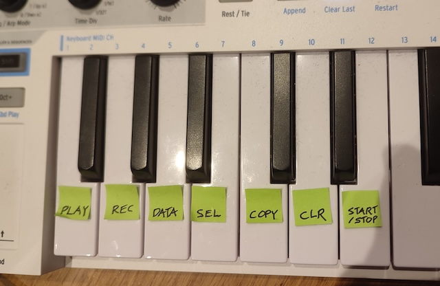
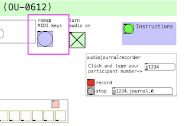
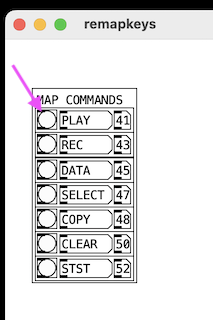

Technology Probes Study on Programming by Playing (Study OU-0612)
You have reached this page because you have expressed an interest in participating in my study. Thank you!
In PureData open the file MAINPATCH_study0612.pd

On your MIDI keyboard, find seven keys that you will map to commands. (You may want to use labels to remember which is which).

Click on Remap MIDI Keys

For each command, click the button on the patch and on your MIDI keyboard press the key you want to map to that command
